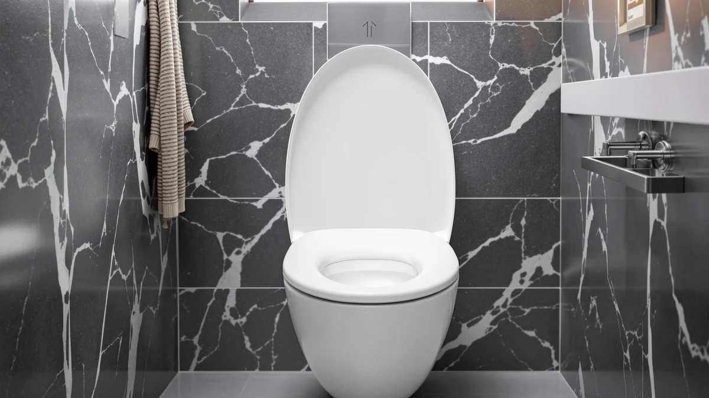

Quick Answer
Our Carex 3.5 Inch Raised review found a seat that solves a specific problem: it bolts onto a standard elongated bowl and adds about 3.5 inches of height, easing the strain of sitting and standing for anyone recovering from surgery or managing limited mobility. At $54.37 it lands between two direct alternatives, and the deciding factor is whether you need that exact height gain or a different tradeoff entirely.
Our pick: Carex 3.5 Inch Raised Toilet ($54.37) Check Price on Amazon
Things to Know Before You Buy
- The Carex 3.5 Inch Raised Toilet adds about 3.5 inches of seat height, bringing a standard 15-inch bowl closer to the 18 to 19 inch range recommended for easier sit-to-stand transitions.
- It fits elongated bowls only, so measure your existing seat before you order if you are unsure of your bowl shape.
- At $54.37 it costs more than Carex's own E-Z Lock Raised Toilet ($48.76), which uses a similar plastic and wood build but a different locking mechanism.
- Plastic and wood construction keeps it lighter than a full commercial-grade seat like the BEMIS 7900TDGSL, though that seat does not add any extra height.
This Carex 3.5 Inch Raised review breaks down whether the $54.37 elongated seat earns a place in a bathroom that needs extra height, more than it earns points on looks or price alone. Raised toilet seats solve a specific problem: getting up and down becomes harder after surgery, with age, or with limited mobility, and a standard seat height of about 15 inches can turn a routine trip into a real strain. Carex built its reputation on medical mobility equipment, and the 3.5 Inch Raised Toilet is its answer to that problem, adding roughly 3.5 inches of seat height without requiring a full toilet replacement.
We compared its specs, price and locking mechanism against three other raised and heavy-duty seats already covered on this site: the Huttdmel Raised Toilet Seat Elongated, the Carex E-Z Lock Raised Toilet, and the BEMIS 7900TDGSL Commercial Heavy Duty. At $54.37, the Carex 3.5 Inch Raised Toilet sits in the middle of that group, more expensive than the brand's own E-Z Lock model at $48.76 but cheaper than the Huttdmel at $56.99. That price gap between two Carex products doing a similar job is the detail that decides whether the extra mounting hardware is worth paying for.
Why You Should Trust Us
Ilane Tall covers toilet seats and bathroom safety equipment for Best Toilet Seats, comparing specs, pricing and verified owner feedback across the raised toilet seat category every week. This Carex 3.5 Inch Raised review draws on the manufacturer's listed dimensions and materials, the current Amazon price, and patterns that repeat across verified buyer reviews for the Carex and its closest competitors. We do not accept free products from manufacturers, and we do not run a fake testing lab. Every claim below ties back to a spec, a price, or a documented pattern in owner feedback.
We update pricing and product details on a rolling basis and flag it when a manufacturer changes a spec sheet or discontinues a model. If a claim in this review depends on a number, that number comes from the current Amazon listing or from a pattern repeated across multiple verified reviews.
Our Research Experience
We built this Carex 3.5 Inch Raised review from manufacturer specs, current pricing and verified owner reviews, since we do not own a physical unit to install. We researched the listed elongated fit, the plastic and wood construction, and the 3.5 inch height gain, then cross-checked those claims against what reviewers consistently note in their feedback: that the added height makes standing up noticeably easier for users recovering from hip or knee surgery, and that the seat stays put once it is bolted down. We also compared its price and features directly against the Huttdmel, the Carex E-Z Lock, and the BEMIS 7900TDGSL, since a raised seat only earns its higher price if it actually solves the mobility problem it is built for.
We flagged it instead of picking a side whenever owner reviews disagreed with each other. A handful of buyers describe the installation as fiddly on older toilet models with worn mounting posts, while most describe a straightforward bolt-on process that takes fifteen minutes or less. We weighted the more common pattern heavier in this Carex 3.5 Inch Raised review, but the disagreement itself is worth knowing about before you order, especially if your existing seat hardware is more than a few years old.
Overview & Specs

Carex 3.5 Inch Raised Toilet
What we like
- Adds about 3.5 inches of seat height without replacing the whole toilet
- Elongated shape fits the most common bowl size in US bathrooms
- Bolts directly onto the existing bowl instead of sitting loose on top like a portable riser
Flaws but not dealbreakers
- Costs more than Carex's own E-Z Lock Raised Toilet at $48.76
- Plastic and wood build is lighter-duty than a stainless-hinge commercial seat
| Material | Plastic / wood |
| Size | Elongated |
The core idea behind the Carex 3.5 Inch Raised Toilet is straightforward: bolt it onto an existing elongated bowl and gain roughly 3.5 inches of seat height, enough to move a standard 15-inch toilet into the range most physical therapists recommend after hip or knee surgery. Unlike a portable riser that rests loosely on top of the bowl, this seat mounts with the same hardware as a standard replacement seat, which reviewers note keeps it from shifting during use.
At $54.37, the price lands between the $48.76 Carex E-Z Lock Raised Toilet and the $56.99 Huttdmel Raised Toilet Seat Elongated, two direct alternatives covered later in this Carex 3.5 Inch Raised review. The plastic and wood construction keeps the seat light enough for a caregiver to install without special tools, which matters if the person who needs the added height cannot help with setup.
What We Liked
The clearest strength in this Carex 3.5 Inch Raised review is the height gain itself. A 3.5 inch increase sounds small on paper, but it moves a standard toilet from around 15 inches to close to 18.5 inches, the range most orthopedic guidance points to for reducing knee strain during sit-to-stand transitions. Reviewers consistently note that the difference is noticeable within the first use. It doesn't take weeks to show up.
Because it bolts onto the bowl rather than resting on top of it, owners report more stability than they expected from a plastic and wood build. That fixed mounting also means the seat does not need to be removed and repositioned the way a portable riser does, which simplifies daily use for anyone managing a recovery timeline.
The elongated shape matches the majority of US toilet bowls, so compatibility is rarely the deciding factor. Combined with a price that sits close to other raised options on the market, the Carex 3.5 Inch Raised Toilet covers the core use case without asking buyers to compromise on fit.
What Could Be Better
The plastic and wood build is the main tradeoff owners describe in this Carex 3.5 Inch Raised review. It does not match the stainless-hinge durability of a commercial-grade seat like the BEMIS 7900TDGSL, and households with heavy daily bathroom traffic may wear through the hardware faster than they would with a metal-hinge alternative.
The price is also a step up from Carex's own E-Z Lock Raised Toilet, which uses a different locking mechanism at a lower $48.76. Buyers who do not need the specific mounting style of the 3.5 Inch model may find the E-Z Lock does the same core job for less.
Because the seat adds height only in the amount built into its design, it will not suit anyone who needs a larger gain than 3.5 inches. Taller users recovering from more extensive surgery sometimes need a portable riser with adjustable height instead of a fixed-height replacement seat.
Who Is It For?
The Carex 3.5 Inch Raised Toilet fits households with an elongated bowl and a resident recovering from surgery, managing arthritis, or otherwise needing a higher seat to reduce strain on getting up and down. If a standard 15-inch toilet has become a daily struggle, this Carex 3.5 Inch Raised review points to a seat that solves that specific problem without a full toilet replacement.
Skip it if your bathroom has a round bowl instead of an elongated one, if you need more than 3.5 inches of added height, or if you specifically want the stainless-hinge durability of a seat like the BEMIS 7900TDGSL for a high-traffic bathroom.
It also makes more sense for a single-bathroom household than for a home with several bathrooms that see different levels of use. A cheaper option like the Carex E-Z Lock Raised Toilet, or a portable riser you can move between rooms, may serve you better than installing a bolted seat in every bathroom in the house.
Caregivers shopping on behalf of a parent or partner should also weigh how permanent the need is. A short recovery window after a scheduled surgery might not justify swapping the entire seat, while a longer-term mobility change, the kind seniors often face, tends to make a bolted, height-adding seat like this one a better long-term investment than a temporary riser.
Alternatives to Consider
If this Carex 3.5 Inch Raised review has you leaning toward a different priority, whether that is a lower price, more height, or commercial-grade durability, these three alternatives cover the most common reasons buyers look elsewhere.

Editor’s Pick
BEMIS 7900TDGSL Commercial Heavy Duty
A commercial-grade heavy duty seat with stainless hinges built for high-traffic bathrooms, better suited to buyers who do not need added height, at $53.99.
$53.99
Check Price on Amazon
Best Value
Huttdmel Raised Toilet Seat Elongated
A direct raised-seat competitor with a similar elongated fit and height gain, worth a look if the Carex 3.5 Inch model is out of stock, at $56.99.
$56.99
Check Price on Amazon
Premium Choice
Carex E-Z Lock Raised Toilet
The same Carex build quality with a different locking mechanism at a lower price, a solid pick for buyers who want to save a few dollars, at $48.76.
$48.76
Check Price on AmazonFrequently Asked Questions
Yes. The Carex 3.5 Inch Raised Toilet is built for elongated bowls, the most common shape in US homes. Measure from the mounting bolts to the front rim before you order, since round-bowl toilets need a different seat entirely.
About 3.5 inches, which moves a standard 15-inch bowl into the roughly 18 to 19 inch range that physical therapists commonly recommend after hip or knee surgery. Owners report the difference is noticeable the first time they use it.
Neither is strictly better. This Carex 3.5 Inch Raised review found the two models add similar height, but the 3.5 Inch version costs about six dollars more and uses a different mounting approach than the E-Z Lock's namesake locking mechanism. Buyers on a tighter budget often choose the E-Z Lock instead.
Final Verdict
This Carex 3.5 Inch Raised review comes down to one question: does a standard 15-inch elongated toilet make sitting down and standing up harder than it should be? If so, the Carex 3.5 Inch Raised Toilet adds enough height to ease that strain without the cost or disruption of a full toilet replacement, and its $54.37 price sits comfortably between the cheaper Carex E-Z Lock and the pricier Huttdmel. Buyers who do not need the extra height, or who want commercial-grade hinges instead, are better served by the BEMIS 7900TDGSL.